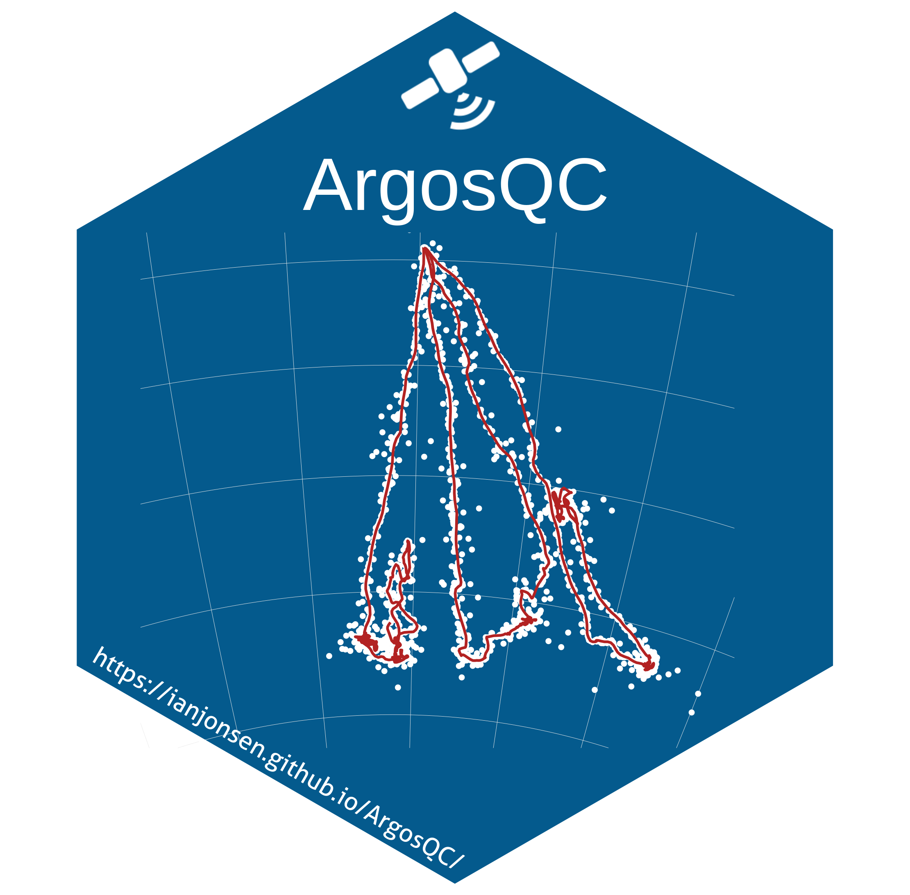

{ArgosQC} 
An R package to conduct unsupervised location quality-control of SMRU SRDL family of tags & Wildlife Computers tag data in near real-time. {ArgosQC} automatically does the following:
- accesses SMRU or WC tag data from a local file source or from manufacturer’s Data portal
- organizes the multi-file data structures
- organizes associated deployment metadata
- collates the tag data with deployment metadata
- fits SSM’s to species-specific subsets of the data
- appends SSM-estimated locations to every tag-measured event record (CTD, dive, haulout, raw Argos location, raw GPS location, etc)
- writes appended tag files to .csv in a user-specified output directory
The SMRU SRDL-CTD tag QC process is detailed in the IMOS Best Practice Manual. The Wildlife Computers tag QC process follows an analogous workflow that accommodates the manufacturer’s tag data file structures.
Installation
You can install the main version of ArgosQC from GitHub with:
# install.packages("remotes")
remotes::install_github("ianjonsen/ArgosQC", dependencies = TRUE)